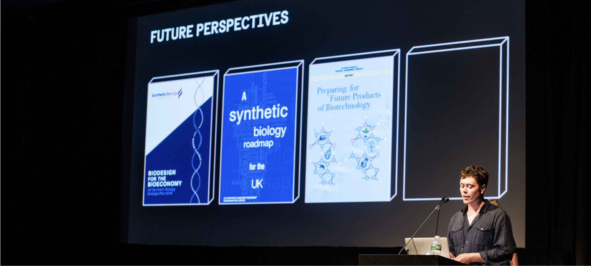

In 2017 I worked alongside two other designers to research the current state of synthetic biology in the UK and explored the potential impact of post-Brexit deregulation and increased uptake of DIY labs. We developed three speculative case studies that detailed how different actors impacted by industrial pollution, gentrification and intellectual property theft might utilise synthetic biology as a form of protest and resistance. The project was presented at MOMA NYC as part of the 2017 Biodesign Challenge symposium and exhibited at the School of Visual Arts in the form of images, an interactive timeline and artefacts.

Review of existing synthetic biology roadmaps from UK government and industry.